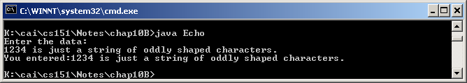

QUESTION 8:
Is data from the keyboard always only characters?


Could the user include digits like 123 in the input characters?
Yes. They are characters just like any other.
As far as this program is concerned, a string of digits is a string of characters and treated like any string of characters. They are not automatically converted into a numeric type. Here is another run of the program:

In a few pages you will see a program that reads in a string of digits and converts them into a numeric data type. Then arithmetic can be done with that data.
Is data from the keyboard always only characters?